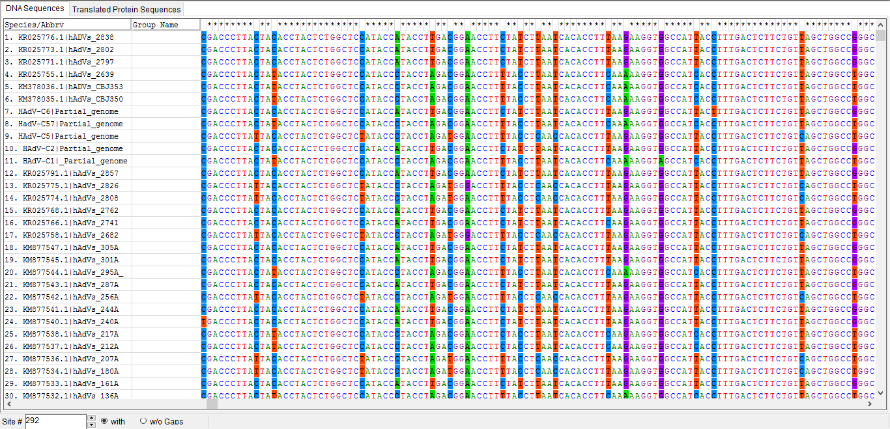

Alineamiento múltiple y elección del mejor modelo de sustitución.¶
Algoritmo de alineamiento múltiple seleccionado¶
Una vez hemos aislado las secuencias de la región C-terminal del hexón del genoma completo de cada uno de los serotipos diferentes de HAdV-C, procedemos a realizar el alineamiento múltiple de dichas regiones con las secuencias obtenidas de los pacientes pediátricos con SARI.
El algoritmo de alineamiento múltiple seleccionado ha sido Clustal, puesto que este es el que se recomienda utilizar cuando se realiza un alineamiento múltiple de secuencias nucleotídicas. Los parámetros utilizados son los incluidos por defecto en el software Mega7 y los resultados los podemos descargar en formato .fasta y .mas (Mega) en los siguientes enlaces:
Alineamiento múltiple hexones según Clustal
Alineamiento múltiple hexones según Clustal (Formato Mega)
Se recomienda que para el alineamiento múltiple de nucleótidos se utilice Clustal. Es por esta razón por la que hemos elegido utilizar este algoritmo para el alineamiento múltiple. Sin embargo, para dar robustez a las conclusiones extraídas a partir del alineamiento múltiple con Clustal y demostrar que el alineamiento múltiple no depende del método utilizado, hemos utilizado también Muscle (datos no mostrados). Los resultados han sido prácticamente los mismos que los obtenidos utilizando Clustal, como cabría esperar porque, por otra parte, no hay razón para que ocurriera lo contrario dado también el gran grado de conservación entre las secuencias.
Podemos encontrar el archivo del alineamiento múltiple según Muscle en formato .fasta en el siguiente enlace:
Análisis del alineamiento múltiple¶
El alineamiento múltiple obtenido con Clustal en Mega7 es presentado parcialmente por las siguientes imágenes, que se han elegido como representativas de lo que encontramos a lo largo de todo el alineamiento múltiple de nucleótidos. El alineamiento múltiple de todas las secuencias puede ser descargado en formato de mega (.mas) en la subsección Material Suplementario de la sección de Conclusiones.
Las mutaciones encontradas, tanto mutaciones missense como mutaciones silenciosas o sinónimas están resaltadas sobre el fondo blanco (salvaguardando el extremo 5’ de algunas secuencias cuya longitud es menor).
{kind=link}
{kind=link}
Como podemos apreciar, las secuencias presentan un alto grado de conservación. En el alineamiento múltiple de nucleótidos, observamos que lo único que existen son ciertas sustituciones puntuales y, en ningún caso, podemos encontrar inserciones o deleciones que nos den lugar a la aparición de gaps (–). Sin embargo, sí que es verdad que ciertas secuencias presentan una zona 5’ con menor número de nucleótidos, aunque posteriormente, desde el inicio de estas secuencias, se observa su alto grado de conservación que se mantiene a lo largo de todas las secuencias de los hexones.
Analizando en detalle el alineamiento múltiple de nucleótidos, podemos corroborar que las transiciones y transversiones que encontramos resaltadas son mayormente mutaciones de tipo sinónimas, que consisten en una mutación que se producen habitualmente en el tercer nucleótido del codón resultando en que no se produce un cambio de aminoácido en la secuencia proteica. El que no se produzca un cambio de aminoácido es debido al balanceo codón-anticodón que da origen a la hipótesis del tambaleo (que explica en parte la redundancia del código genético). En la imagen inferior podemos observar una mutación sinónima resaltada en rojo, observando cómo la transición T-C no provoca un cambio en el aminoácido, que sigue siendo asparragina.
{kind=link}
{kind=link}
Minoritariamente, en el alineamiento múltiple encontramos mutaciones como la señalada en color negro en las imágenes inferiores. Estas mutaciones son mutaciones de tipo missense en las que el cambio del nucleótido del codón provoca un cambio en la secuencia aminoacídica. Normalmente, encontramos que la mutación se produce en el primer o segundo nucleótido del codón, ya que es más difícil que se produzca un mantenimiento del código genético, aunque no es imposible por la redundancia del código genético (algunos aminoácidos son codificiados hasta por seis codones).
{kind=link}
{kind=link}
Como conclusión, en el alineamiento múltiple observamos que existe un alto grado de conservación en el que son frecuentes las mutaciones sinónimas, como podemos observar en la comparación de estas dos imágenes extraídas del alineamiento múltiple:
{kind=link}
{kind=link}
Finalmente, es importante destacar que la proporción de mutaciones missense, es superior a medida que nos vamos acercando al final del alineamiento múltiple; aunque, insistimos, el grado de conservación es muy elevado entre las secuencias. Podemos observar los cambios de aminoácidos causados por mutaciones missense en el alineamiento múltiple de las secuencias de aminoácidos:
{kind=link}
La mayoría de mutaciones missense observadas son mutaciones missense cuyo análisis no merece mayor atención que decir que se produce una sustitución de un aminoácido de un grupo por otro aminoácido con las mismas propiedades bioquímicas. Sin embargo, también observamos que en algunas mutaciones missense, el cambio de codón implican el cambio de un aminoácido por otro que presenta unas características bioquímicas diferentes. Estas últimas sustituciones han sido señaladas en la imagen superior con un círculo azul y se deben a las siguientes sustituciones de nucleótidos, señaladas a continuación por un cuadrado color rojo.
{kind=link}
- La mutación en la que se produce el cambio de aspartato (D) por asparragina (N) se debe a una transición G-A en el primer aminoácido del codón.
- La mutación en la que se produce el cambio de treonina (T) por prolina (P) se debe a una transversión A-C. Esta mutación missense puede resultar importante para la estructura del hexón, al ser la prolina un aminoácido con un anillo pirrólico que puede presentar una restricción a la hora del plegamiento.
{kind=link}
Clasificación de los mejores modelos de sustitución.¶
{kind=link}
Utilizando la función que se incluye en el programa Mega 7, en el apartado Models y que está nombrada como Find Best DNA/Protein Models; procedemos a identificar cuál de los múltiples modelos de sustitución que existen es el idóneo para realizar el análisis filogenético de nuestras secuencias alineadas.
Los parámetros que se han utilizado en el análisis son los que vienen dados por defecto en la función, y podemos verlos en la imagen de la derecha.
Los resultados del análisis del alineamiento múltiple para encontrar el mejor modelo de sustitución vienen expresados en la siguiente tabla. Es por ello que hemos seleccionado para el cálculo del árbol filogenético el modelo de Kimura 2 parámetros con una gamma de 0,27, el primer modelo en la tabla generada y que, además, se encuentra disponible para ser utilizado por Mega.
Tabla 3 - Clasificación de los mejores modelos para la construcción del árbol filogenético.
{kind=link}

{kind=link}
Descripción y comentario del modelo de sustitución seleccionado¶
{kind=link}
El modelo de Kimura 2 parámetros utiliza una probabilidad alfa de que ocurran transiciones, y una probabilidad beta de que ocurran transversiones y, en principio, considera que los rangos de sustitución no varían a lo largo de la secuencia. Es por ello que al modelo de Kimura 2-parámetros se le añade una gamma de 0.27 que aporta como información adicional el lugar donde es más probable que ocurra una mutación. En este caso, la gamma es 0,27, y se asume que es más probable que la mutación ocurra al inicio de la secuencia.
{kind=link}
Además del modelo Kimura 2-parámetros, es necesario e interesante realizar el análisis filogenético con otro modelo de sustitución que se encuentre en las primeras posiciones de los recomendados por Mega para así otorgar de robustez el árbol filogenético que se genere a continuación. Puesto que Mega no nos deja utilizar HKY+G, el análisis suplementario se ha realizado con el siguiente modelo, que es el modelo Tamura-Nei, 93 (TN93) con gamma = 0,29. El modelo TN93 tiene cuatro parámetros que son frecuencias y que tiene en cuenta las diferencias entre transiciones y transversiones y, además, las diferencias entre los dos tipos de transiciones (purina-purina & pirimidina-pirimidina).